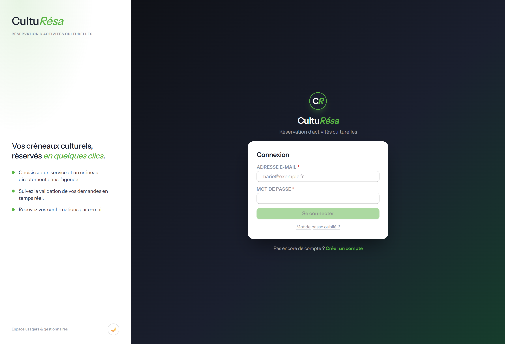
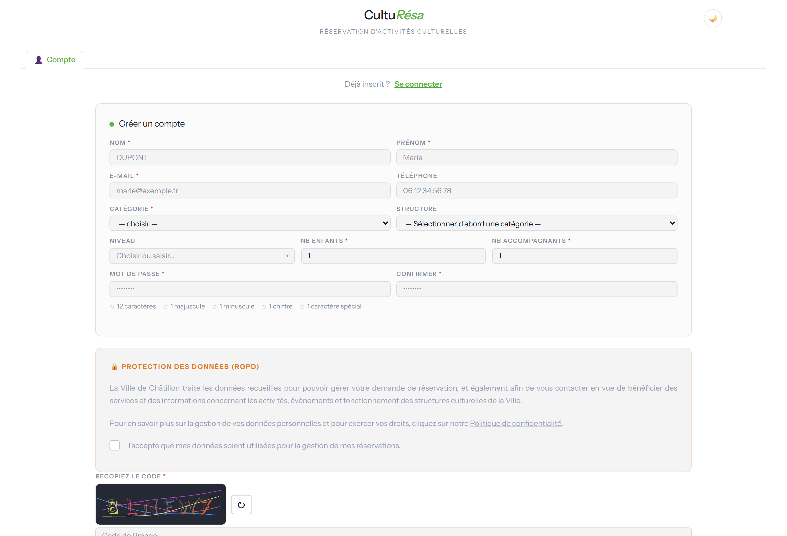
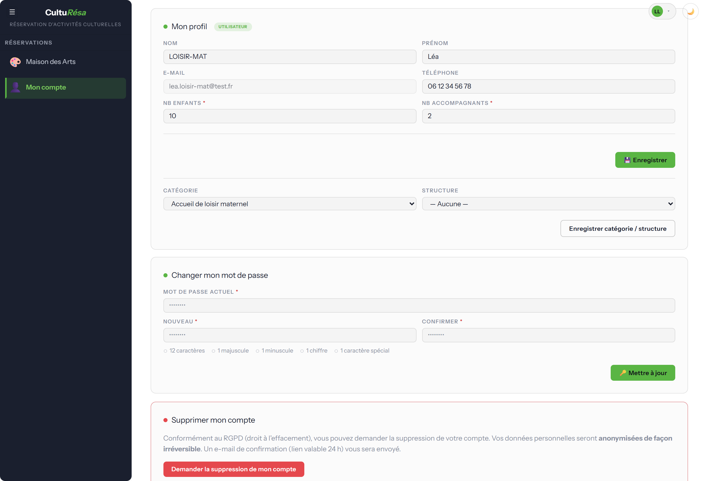
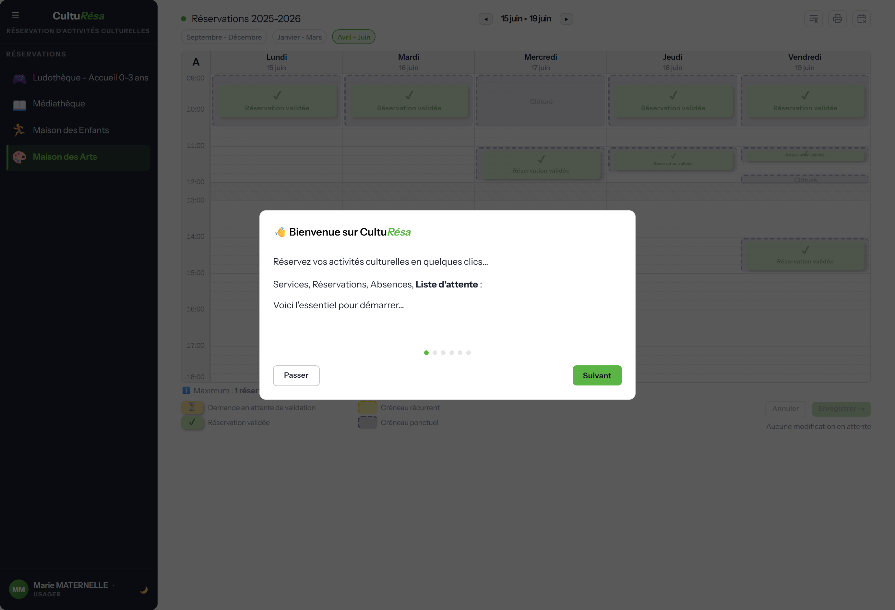
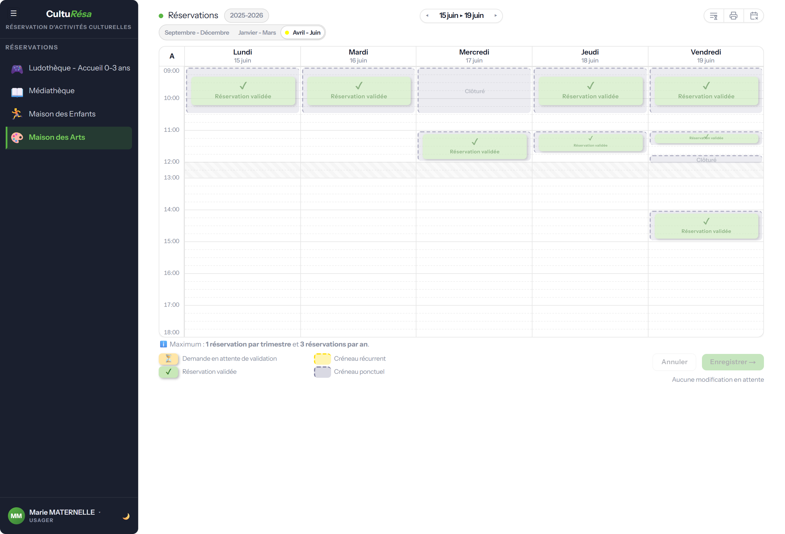

Guide de l'usager — CultuRésa
Réservation d'activités culturelles.
CultuRésa est l'application de réservation d'activités culturelles. Elle permet aux usagers de réserver des créneaux d'activités proposées par différents services (médiathèque, conservatoire, ludothèque, maison des enfants, maison des arts…), aux gestionnaires d'organiser ces activités et de suivre la présence, et aux administrateurs de piloter l'ensemble du système.
Ce guide est organisé par profil d'utilisateur. Chaque section décrit ce que vous pouvez faire dans l'application. Pour l'installation et l'exploitation serveur, voir le Guide d'administration et le runbook d'exploitation.
Une présentation interactive (fenêtre de bienvenue) reprend l'essentiel de ce guide à la première connexion, adaptée au rôle. On peut la revoir à tout moment via le menu utilisateur → « Revoir la présentation ».
Les trois profils
| Profil | Ce qu'il peut faire |
|---|---|
| Usager | Réserver des créneaux d'activités, gérer ses réservations, modifier son compte. |
| Gestionnaire | Tout ce que fait l'usager, plus la gestion des services qui lui sont confiés : créneaux, réservations, pointage, statistiques et paramètres. |
| Administrateur | Tout ce que fait le gestionnaire, sur tous les services, plus la gestion des utilisateurs, des référentiels, de la messagerie et du RGPD. |
Pour tous les utilisateurs
Se connecter
Sur la page de connexion, saisissez votre adresse e-mail et votre mot de passe, puis cliquez sur « Connexion ». Les liens « Créer un compte » et « Mot de passe oublié ? » sont accessibles depuis cet écran.

Figure 1 — Page de connexion
Créer un compte
L'inscription se fait en renseignant votre identité (nom, prénom, e-mail, téléphone), puis en choisissant votre catégorie (le demandeur : établissement ou organisme), votre structure et votre niveau. Le nombre d'enfants et d'accompagnants est obligatoire : au moins 1 de chaque (champs marqués d'un astérisque). L'acceptation de la politique de confidentialité (RGPD) et la recopie d'un code de sécurité sont également demandées.
Un e-mail de vérification vous est ensuite envoyé pour activer votre compte.

Figure 2 — Formulaire de création de compte
Gérer son compte
Depuis « Mon compte », vous pouvez modifier vos informations personnelles, changer votre mot de passe et demander la suppression de votre compte :
- Mon profil — nom, prénom, e-mail, téléphone.
- Changer mon mot de passe — avec rappel des règles de sécurité (12 caractères, majuscule, minuscule, chiffre, caractère spécial).
- Supprimer mon compte — conformément au RGPD, vos données sont anonymisées de façon irréversible après un délai de grâce (e-mail de confirmation valable 24 h).

Figure 3 — Écran « Mon compte »
Pour les usagers — réserver une activité
Première connexion
À la première connexion, une fenêtre de bienvenue présente l'essentiel pour démarrer. Vous pouvez la parcourir avec « Suivant » ou la fermer avec « Passer ».

Figure 4 — Fenêtre de bienvenue (première connexion)
L'agenda de réservation
Sélectionnez un service dans le menu de gauche pour ouvrir son agenda. La vue présente une semaine type avec les créneaux disponibles.
- Semaines A / B — pour les activités en alternance, basculez entre la semaine A (semaines impaires) et la semaine B (semaines paires).
- Période / exercice — un bandeau indique l'année scolaire ou la période en cours.
- Indicateurs — chaque créneau affiche le nombre de places, son statut (en attente de validation, validée) et, le cas échéant, « Clôturé ».
- Légende — un rappel précise le nombre de séances réservables et les conditions du service (récurrent, semaines A/B, validation, thèmes, jauge, jours fériés, vacances scolaires).
- Plus de place — à votre arrivée sur l'agenda ou sur une période, si plus aucun créneau de la période affichée n'est réservable (tout est complet, clos ou hors délai), un message vous en informe et vous invite à contacter le service par e-mail (si le service a activé cette alerte).

Figure 5 — Agenda de réservation côté usager
Réserver, modifier, annuler
- Cliquez sur un créneau disponible dans l'agenda.
- Renseignez les informations demandées : éventuel thème, nombre d'enfants et d'accompagnants.
- Cliquez sur « Enregistrer » pour confirmer. Un e-mail de confirmation vous est envoyé.
Vous pouvez annuler une réservation tant qu'elle n'est pas verrouillée. Si le service active le verrouillage des réservations validées, une réservation validée ne peut plus être annulée ni déplacée. Un bouton permet aussi d'imprimer votre liste de réservations.
Prévenir d'une absence
Vous ne pourrez pas venir à une séance sans vouloir annuler toute votre réservation ? Si le service a activé les absences prévenues, prévenez-le depuis l'agenda :
- Affichez la semaine de la séance et repérez votre réservation.
- Survolez son badge et cliquez sur le macaron A « Prévenir d'une absence », en haut à gauche du badge.
- Indiquez si vous le souhaitez un motif (facultatif), puis confirmez.
Le service est informé par e-mail et le macaron passe en orange. Votre réservation est conservée : seule la séance concernée est signalée. Si vous pouvez finalement venir, cliquez de nouveau sur le macaron puis sur « Retirer l'absence ». Une absence se signale sur une séance à venir (jour même inclus), tant qu'elle n'a pas été pointée par le service. Le bouton « Prévenir d'une absence », à droite des onglets de période, rappelle cette procédure.
Liste d'attente
Tout est complet ? Si le service a activé la liste d'attente, le bouton « Liste d'attente », à droite des onglets de période, ouvre une fenêtre où vous indiquez vos disponibilités par demi-journée (matin / après-midi, sur les jours d'ouverture du service). Vous serez prévenu par e-mail dès que des créneaux correspondant à vos disponibilités se libéreront, dans l'ordre d'inscription. Cochez « M'inscrire automatiquement dès qu'un créneau se libère » pour que la réservation soit faite en votre nom, avec les participants de votre fiche : vous en êtes informé par e-mail et retiré de la liste. Validez avec « S'inscrire sur la liste d'attente » ; une fois inscrit, le même bouton permet de mettre à jour vos disponibilités ou de vous retirer de la liste.
Règles appliquées automatiquement
Lors d'une réservation, l'application vérifie automatiquement :
- la capacité du créneau (selon que les accompagnants comptent ou non dans la jauge) ;
- votre droit d'accès au service, selon votre demandeur ;
- le nombre maximum de réservations autorisé (par service et par période) ;
- les jours de fermeture : un créneau en période de vacances scolaires n'est réservable que si le service et le demandeur sont ouverts ce jour-là ;
- le délai de réservation : les créneaux trop proches dans le temps ne sont pas réservables.
Rappels automatiques
Vous recevez des rappels par e-mail avant vos créneaux : un rappel 7 jours avant (J-7) et un rappel la veille (J-1).
Notions clés
- Demandeur — l'établissement ou l'organisme auquel un usager est rattaché. Il conditionne l'accès aux services et les jours d'ouverture.
- Structure — unité organisationnelle sous un demandeur ; rattacher un usager à une structure lui fait hériter du demandeur.
- Niveau — classification (par demandeur) utilisée dans le profil et les statistiques.
- Service — une activité culturelle, avec ses propres créneaux, périodes, règles et e-mails.
- Période / Exercice — une période est une plage de dates (saison, semestre) ; l'exercice correspond à l'année (ex. « 2025-2026 »).
- Créneau — un créneau récurrent se répète chaque semaine ; un créneau ponctuel correspond à une date précise (un créneau = un jour).
- Semaines A / B — alternance pour les activités bi-hebdomadaires : semaine impaire = A, semaine paire = B.
- Validation / verrouillage — une réservation validée peut être verrouillée (selon le réglage du service), empêchant toute annulation ou déplacement côté usager.
- Pointage / absence prévenue — le pointage constate la présence ou l'absence après la séance ; l'absence prévenue est un signalement à l'avance (usager ou gestionnaire) qui n'annule pas la réservation et pré-remplit le pointage « Absent ».
- Jauge — la capacité d'un créneau ; selon le service, les accompagnants y sont comptés ou non.
- Vacances scolaires — récupérées depuis le calendrier officiel selon la zone ; un jour de vacances n'est réservable que si le service et le demandeur sont ouverts.
Automatismes en arrière-plan
Plusieurs traitements s'exécutent automatiquement, sans intervention :
- Validation automatique des réservations après un délai paramétré, avec récapitulatif envoyé aux gestionnaires.
- Rappels de réservation envoyés aux usagers (J-7 et J-1).
- Notifications de validation regroupées : l'e-mail de validation ou de remise en attente part après le délai réglé dans Échanges et ne reflète que l'état final.
- Liste d'attente : toutes les 5 minutes, pour chaque inscrit et dans l'ordre d'inscription, recherche des créneaux réservables correspondant à ses disponibilités — inscription automatique si demandée, sinon e-mail « créneaux libérés » (nouveautés seulement).
- Conservation des données : anonymisation des comptes inactifs après l'avis de suppression.